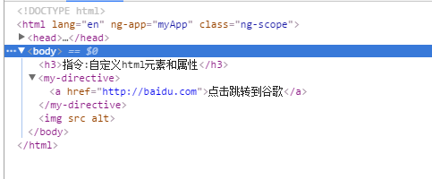
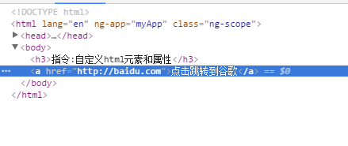

replace:true 用自定义元素取代指令声明,而不是嵌套在其内部。  
we can access: {{rootProperty}}
we can access: {{rootProperty}} and {{parentProperty}}
we can access: {{rootProperty}} and {{parentProperty}} and {{childProperty}}。
{{fullSentenceFromChild}}